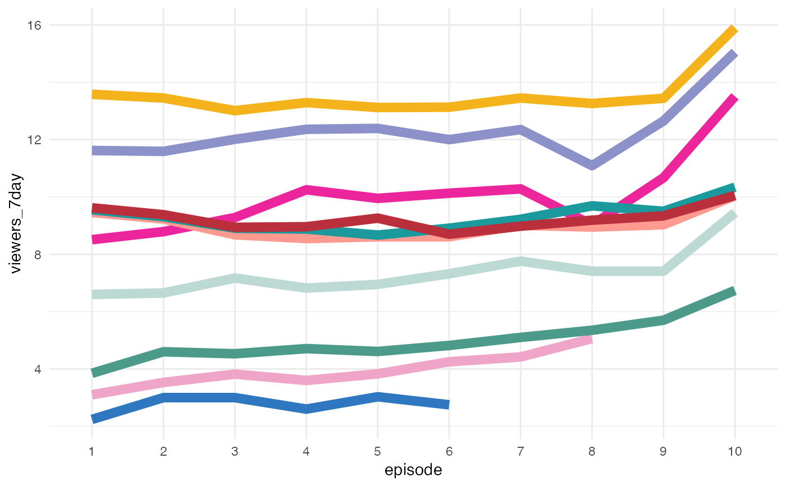
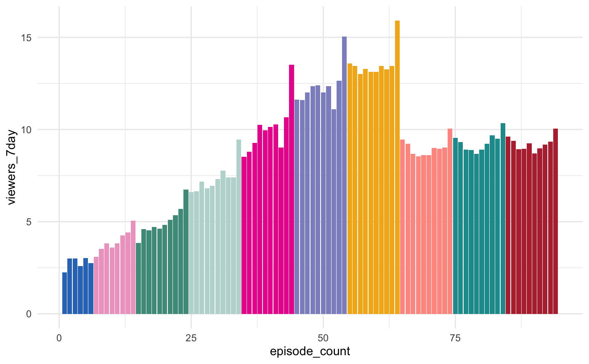

Color scale constructor for bakeoff colors
Fill scale constructor for bakeoff colors
scale_color_bakeoff( palette = "showstopper", discrete = TRUE, direction = 1, ... ) scale_fill_bakeoff( palette = "showstopper", discrete = TRUE, direction = 1, ... )
| palette | Character name of palette in bakeoff_palette |
|---|---|
| discrete | Boolean indicating whether color aesthetic is discrete or not |
| direction | Either |
| ... | Additional arguments passed to discrete_scale() or scale_fill_gradientn(), used respectively when discrete is TRUE or FALSE |
if (require('ggplot2')) { ggplot(ratings, aes(x = episode, y = viewers_7day, group = series, color = series)) + geom_line(lwd = 3) + theme_minimal() + scale_color_bakeoff("finale", guide = FALSE) }if (require('ggplot2')) { ggplot(ratings, aes(x = episode_count, y = viewers_7day, fill = series)) + geom_col() + theme_minimal() + scale_fill_bakeoff("finale", guide = FALSE) }